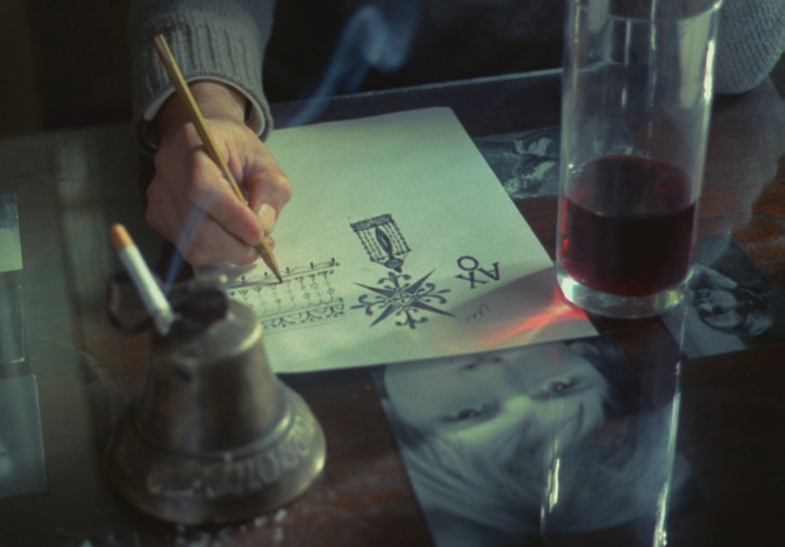
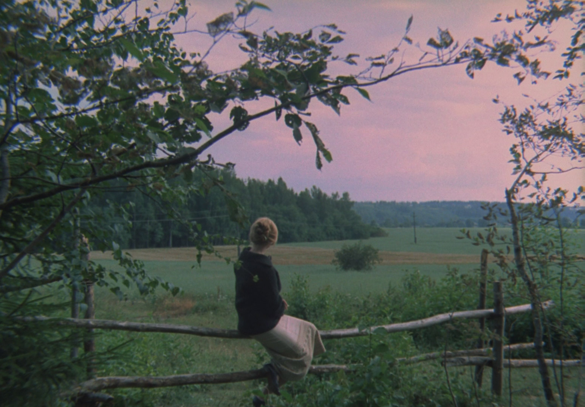
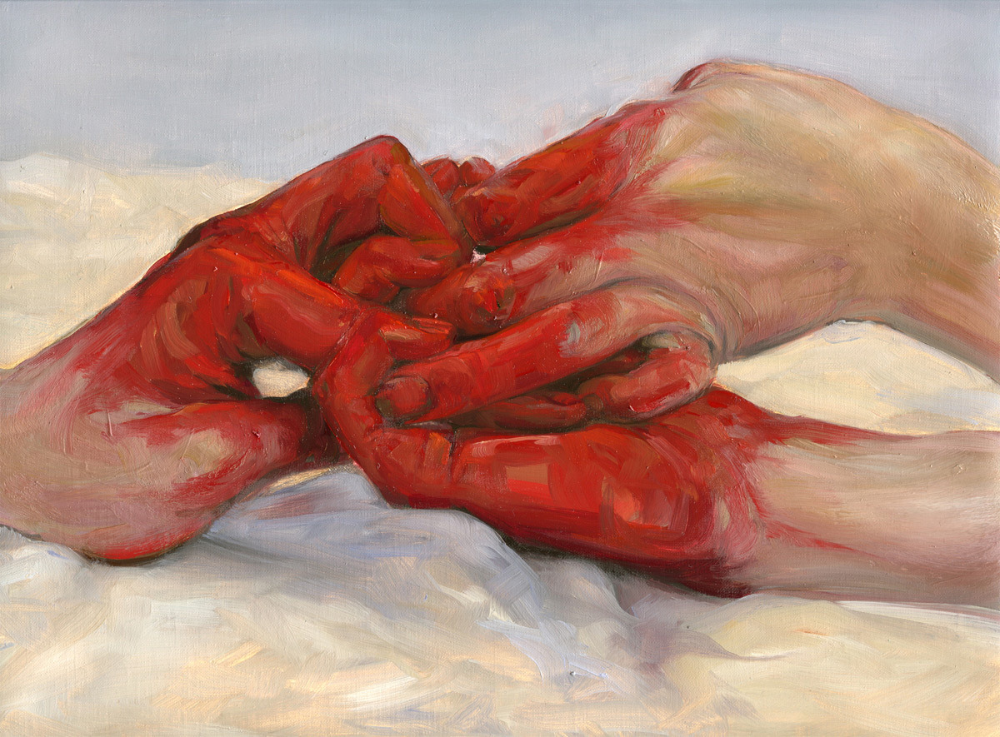
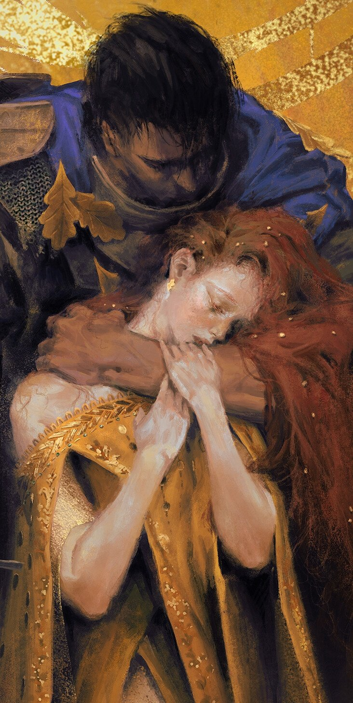

#10 (Embrace Life's Wonders:
Beyond the Grime and Dust)
Life is short, time is flimsy, and the days
are caught in a whirlwind of moments
passing by, so grime if you must.
like meteors streaking across the sky.
...
Don't forget to embrace the joys of
creation, both large and small, which give
us all meaning and purpose as
you organize and clean your space.

Instead of simply wiping the dirt and grime,
Grab a brush, let your creativity soar, and
Create a picture, let the colors flow, and
capture the entire world in one sight.
...
or use a pen and paper to write.
To a friend or foe, write a letter.
Share your ideas, aspirations, and dreams,
Let the light of your words shine like the sun.

Make a cake with tenderness and care,
Share it with your loved ones,
feed your soul as well as your body,
With sweetness that can mend broken hearts.
...
Watch a pollen grow by cultivating it,
Observe the miracle of life's lovely display,
Take in the wonders of nature as you
stroll among the earth's treasures.

Think about the distinction between want and need.
Consider what truly fills your heart—not
it's material things or illusory fame, but
treasured moments and a caring flame.
...
There are rivers to swim in and mountains to
climb, and there are adventures in every climate.
Reading books that complete us and
listening to music that uplifts the spirit.

Life to give way with desire and passion,
Embracing each day, Feeling Truly Blessed,
Friends to cherish, Connections to make,
Love to give and Memories to take.
...
And although old age might eventually
arrive with its challenges that might astound,
Keep in mind that the grime you remove
is merely a reminder of the important times.
Because when you pass away—and you
must—leaving behind your beloved trust,
your legacy will endure in the affection
and memories of the people you freed.
...
So, grime if you must, but keep in mind that
life's treasures are easy to find. Embrace life's
wonders and give it your all in every moment.